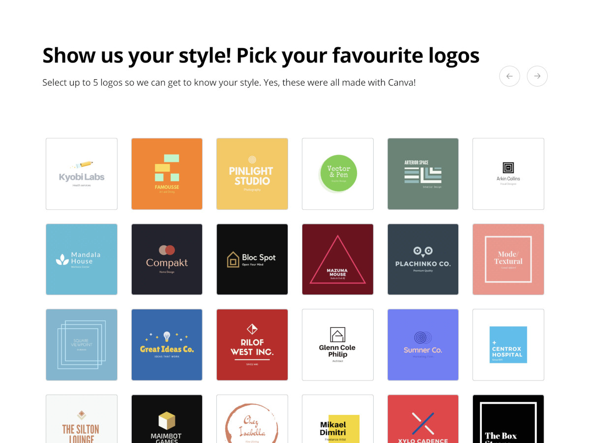

Logo maker page for Canva
Online logo generator
Logo Maker was an experimental tool that generates a customized logo in Canva. You supply the brand name, style, and colors; it would do the rest!
Update: The experiment has been decommissioned. But you can still look at the original version via Archive!
Project details- released
- 2018
- role
- developer
- platform
- Web
- tech
- HTML, CSS, JS
My role in this project was the implementation of the landing page, the “choices” modal interface, and integration with the internal design API.

The internal design API was used to generate dynamic designs controlled by the user’s input parameters.
Once the design is generated, it can be further customized in the Canva Editor.

Update: Would you look at that, Adobe Express (Adobe’s Canva clone) has its very own logo maker thingie. I must say it works smoother though, but it doesn’t seem to be integrated with their editor.